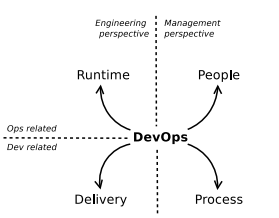

A survey of DevOps concepts and challenges
Investigando os Desafios do DevOps
Apesar da ampla adoção e do impacto irreversível do movimento DevOps nas organizações de Tecnologia da Informação, os conceitos e definições que o cercam frequentemente apresentam divergências entre a comunidade acadêmica e a indústria.
Neste artigo — amplamente referenciado e conceituado na literatura de Engenharia de Software (+700 citações) —, realizamos uma investigação que alinha o rigor científico às práticas cotidianas. Nós conduzimos uma extensa revisão da literatura científica (Survey) cruzada com perspectivas reais oriundas de engenheiros, gestores e especialistas atuantes no mercado de software.
Principais Constatações
- A Falta de uma Taxonomia Única: Embora existam múltiplas definições, há um consenso em torno de pilares convergentes, permitindo a proposta de um modelo conceitual unificado.
- Barreiras Sociais e Culturais: A transição e a quebra de silos departamentais entre equipes formam o entrave mais subestimado pelas empresas, superando frequentemente os abismos tecnológicos.
- Complexidade Arquitetural: Os consideráveis desafios impostos por arquiteturas legadas frente às necessidades fluídas de testes automatizados e Integração/Entrega Contínuas (CI/CD).
"A adoção bem-sucedida de DevOps transcende a mera implementação de um pipeline de ferramentas; ela exige uma transformação profunda e orgânica no fluxo de valor de toda a companhia."